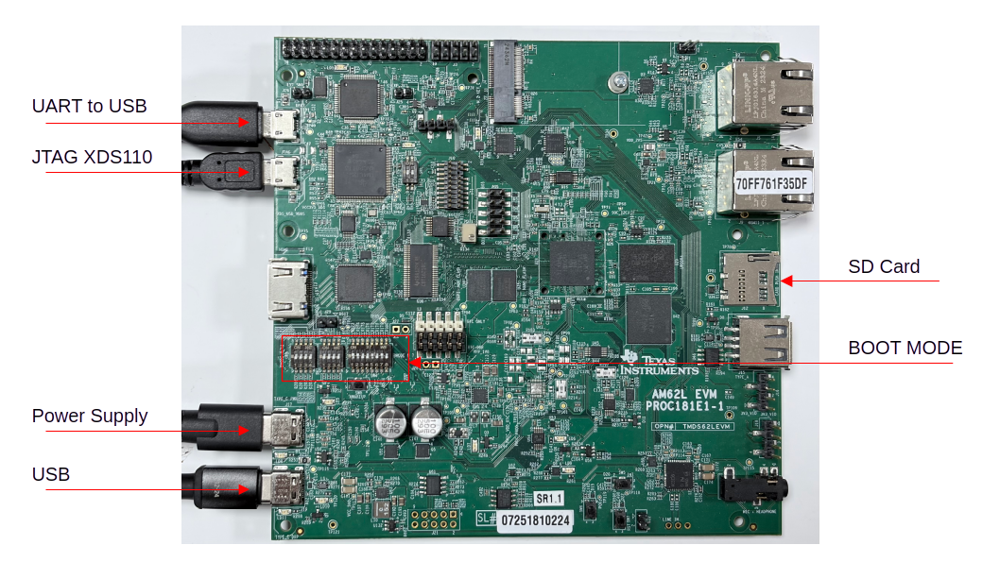
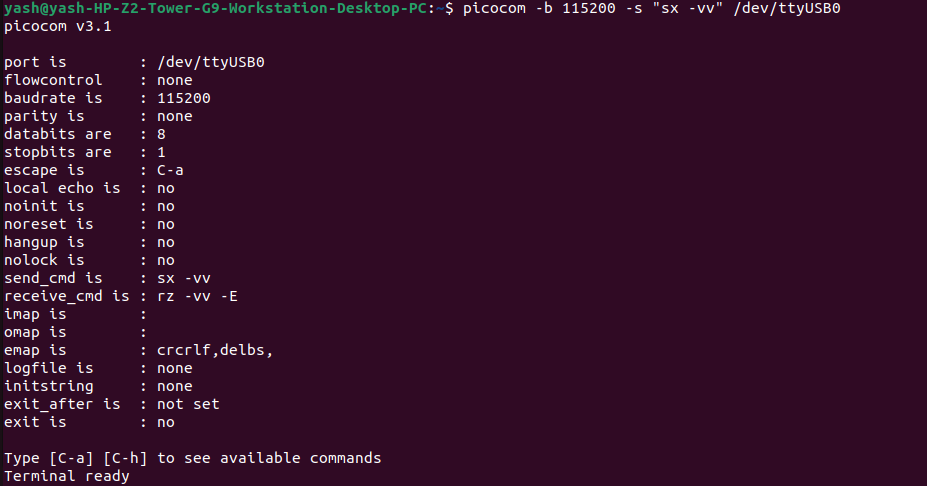
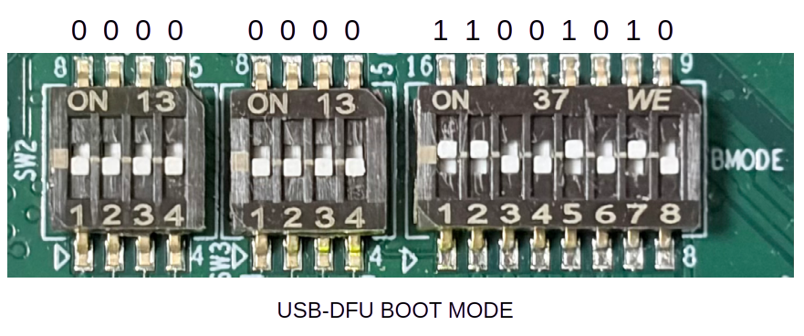

Step 2: Board Setup
Cable Connections
- The figure below shows some important cable connections, ports and switches.
Take note of the location of the “BOOTMODE” switch, this is used to switch between different boot modes like USB-DFU, OSPI, UART, SD, NOBOOT mode

Setup UART Terminal
Many examples use a standard UART terminal to log the output from the examples.(You can use any UART terminal program for the same. Below steps show how to setup the UART terminal from picocom.)
- First identify the UART port as enumerated on the host machine.
Make sure that the EVM and UART cable connected as shown in Cable Connections.
In linux, if you can see /dev/ttyUSB* directories, those are the UART ports.
Main UART 0 which corresponds to /dev/ttyUSB0 is the port where UART logs of the application come.
To open Main UART 0, enter the following command on the terminal:
picocom -b 115200 -s "sx -vv" /dev/ttyUSB0
Keep other options to default, i.e 115200 baud rate - 8 data bits - No parity - 1 stop bit,

One tip to make sure there is no mistake in identifying the UART port is to disconnect all other UART to USB devices other than this EVM before checking.
BOOT MODE
USB-DFU BOOT MODE
This mode is used to send files to the board via USB-DFU. It is used to boot applications via USB-DFU.
BOOTMODE [ 8 : 15 ] (SW4) = 1100 1010
BOOTMODE [ 4 : 7 ] (SW3) = 0000
BOOTMODE [ 0 : 3 ] (SW2) = 0000

Note
For any other details about the AM62L EVM kindly refer to the board user guide board user guide
SD-Card BOOT MODE
This mode is used to boot applications via SD Card.
BOOTMODE [ 8 : 15 ] (SW4) = 1100 0010
BOOTMODE [ 4 : 7 ] (SW3) = 0000
BOOTMODE [ 0 : 3 ] (SW2) = 0100
Flashing and Booting setup
Note
This method uses the SD Card based boot method
AM62L boots from an SD card. Download TI’s official WIC image
and write it to an SD card using an etching tool like balena etcher.